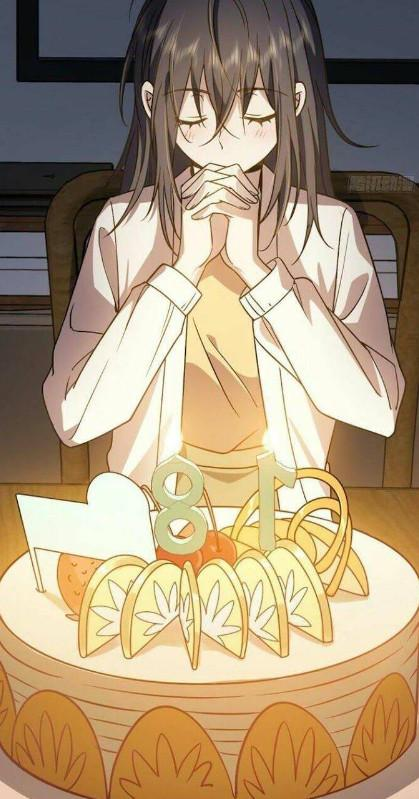

Sáng hôm sau, mở mắt ra, Dương thấy mình đang nằm trên giường ngủ, bên cạnh là Hương đang ôm anh, đêm qua mọi người đã dìu Dương vào phòng và Hương cũng ôm cậu ngủ đến sáng. Dương nhìn Hương, dì thật xinh đẹp, môi mắt quyến rũ, đôi môi nhỏ nhắn, mái tóc dài thướt tha gợn sóng, chiếc váy ngủ hàng hiệu càng tôn lên cơ thể tuyệt vời. Thân hình đó, vòng 1 đó… biết bao nhiêu chàng trai phải mơ ước và theo đuổi. Vậy mà Hương đã thất bại trước cậu. Dương càng xót xa, cậu ôm Hương vào lòng, hôn lên má cô.

Hương: “Aaaa… daaaa… thoải mái quá… anh dậy rồi hả, đêm qua anh ngủ ngon không?”
Hương vùi đầu vào lòng Dương chỉ muốn ngủ tiếp. Dương xoa đầu cô: “Dậy thôi, anh nghe tiếng hình như bố anh về đấy”
Cả 2 mặc đồ chỉnh tề đi xuống phòng khách, Hương ôm tay Dương đi xuống, dùng ánh mắt ngại ngần nhìn Thành.
Hương: “Dạ… em… dạ con chào bố”
Thành hiểu ra vấn đề vui vẻ: “Ngồi xuống đi, 2 đứa ngồi xuống đi… làm gì mà ngại ngùng thế. Thu kể cho anh nghe cả rồi, à nhầm bố nghe cả rồi”
Đạt cười hắc hắc: “Bây giờ anh hay là bố, nè trước đó không biết, bây giờ là hàng cấm rồi nhé, chú mà ti toe anh giết chú đấy”
Thành cười: “Chuyện qua rồi, bây giờ già hết rồi, lo công việc không đã mệt đứt cả hơi, còn thời gian đâu mà nghĩ vớ vẩn, cậu cũng thế, còn mần ăn gì nổi không”
Đạt: “Nè… vẫn ngày 7 đêm 3 nhé, đừng coi thường nhau… ha ha”
Minh: “Thôi… thôi… chú đừng có mồm điêu, bốc phét ít thôi. Dương bố cũng nghe mọi việc rồi, bây giờ con cần thêm vũ khí gì không”
Dương ấp úng: “Con… con cần súng đạn, càng nhiều càng tốt”
Minh đã chuẩn bị trước, ông lôi va li đặt lên bàn: “Đây Walther P99, cây lục này hơi bị ngon đấy, hiệu quả, dễ sử dụng. AK47, cái này khỏi nói rồi nhé, thêm súng trường XM5 loại này có giảm thanh thích hợp khi chiến với zombie, độ cơ động cao, và AWM, tạm thời bố tập hợp được nhiêu đó thôi, đạn thì vô tư, thời gian tới bố sẽ liên hệ bên nước M nhập Barrett và một số loại hạng nặng khác, con chắc có thể sử dụng thành thạo hết chứ, có cần bố chuẩn bị cho 1 khóa huấn luyện không”
Cả nhóm đàn ông như 1 đám trẻ mê mẩn mấy khẩu súng trên bàn, Dương nhìn rồi nhanh như cái máy tháo lắp gắn hộp đạn, lên nòng nhắm thử các loại. Lần nữa cả đám đàn ông trố mắt nhìn Dương ngưỡng mộ.
Đạt cười giỡn: “Mé hồi đó chiến với tên kia mà sử dụng súng chuyên nghiệp như thằng Dương bây giờ thì đỡ biết mấy”
Dương tiếp lời: “Con xem video đó rồi, nhưng mà, con từng gặp 1 con Zombie tiến hóa, không kém gì tên đó đâu, con đã hạ nó bằng kiếm đó”
Lâm: “Thật hả, kể… kể nghe liền đi… ganh tị quá”
Thành tham gia: “Uhm kinh doanh cũng chán rồi, bây giờ cả bọn vào được thế giới đó đi săn Zombie cũng hay nhỉ, nghe phấn khích vô cùng”
Dương vui vẻ cùng các chú và bố kể lại chuyện ở thế giới song song, rồi tới chuyện phải làm nhiệm vụ bên đó. Dương cố ý giấu chuyện quan hệ tình dục nhưng bị bố và các chú tinh ý, hỏi tới mãi cũng lộ ra.
Thành cười ha hả: “Nè cô giáo chủ nhiệm của thằng Dương tui gặp một lần rồi, đẹp lắm nha”
Đạt: “Bên kia mần rồi, vậy bên này chơi tới luôn đi Dương, làm bên này có được cộng lại điểm không”
Dương: “Dạ được, con hỏi hệ thống rồi, tuy cùng là người đó nhưng 2 thế giới khác nhau, nên đều tính được 1 lần cả, nhưng mà chú đừng nghĩ nữa, cô bên này khó lắm”
Minh: “Khó đến mức nào cơ chứ, con muốn là được”
Dương: “Dạ thôi, hôm qua làm nhiệm vụ thôi đã mệt lắm rồi”
Thành: “Nhắc tới nhiệm vụ, con chưa có nhiệm vụ mới à, còn mấy chục cô sáng nay về cùng bố đấy, triển luôn đi”
Dương: “Chắc con ngắm thôi, tối nay con đi sinh nhật bên nhà bạn gái, mẹ có nói với bố chưa?”
Thành: “Uhm suýt bố quên, thế con chuẩn bị nhìn 1 lượt làm nhiệm vụ nữa đi, xong thì ở nhà chơi, tối nay cùng bố mẹ qua bên đấy gặp 1 lần xem sao”
Dương: “Vâng giờ làm tiếp nhiệm vụ, nhưng mà tối nay con đi dùng đám bạn, nha… tại có hẹn với tụi nó rồi”
Thành: “Ok”
Tuấn: “Khoan đã, bàn thêm vấn đề này đã, tôi đã khảo sát bản đồ và tính toán, nếu như thế giới song song giống bên đây thì khả năng rất cao chỗ tập trung và phòng thủ tốt nhất mà chính phủ chọn chính là thành phố Vin – Future, và 1 điều nữa là nhà máy xuất khẩu lương thực lớn nhất ở tỉnh mình, đây… nhìn trên bản đồ nó cách không xa căn nhà này. Dương này, chú có thể hướng dẫn con thiết kế 1 lộ tuyến, các hệ thống phòng thủ và cả tấn công vào thành phố Vin – Future này nếu cần thiết”
Đạt: “Uhm, bên tôi sẽ cho thợ và kỹ thuật thế kế ngay bản vẽ cải tạo xe bình thường thành xe thiết giáp, chỉ cần Dương rảnh qua chú sẽ hướng dẫn”
Danh: “Ở nhà chú có vườn cây, chú sẽ tìm hiểu một số hạt giống tốt và ngắn ngày, rồi tập hợp về đây cho cháu”
Minh: “Hay đấy, mọi người cùng lập và lên kế hoạch thống nhất đất nước luôn, ở tận thế chính là thời thế tạo anh hùng”
Dương: “KHOAN… DỪNG ĐÃ… trời ơi, con chỉ muốn tìm hiểu 1 chút thôi, không phải muốn làm bá chủ thế giới”
Minh: “Nhưng mà thế giới này có thể nói là trò chơi thực tế ảo hiện đại nhất và quy mô nhất, không khai thác thì phí lắm, còn tài nguyên, vàng bạc trong đó nữa…”
Thu và Lan từ xa nghe cười như được mùa: “Ha ha… mấy ông vô đúng chủ đề rồi, ông nào cũng ham… thôi từ từ tính, mấy ông làm thằng bé con tôi nó hoảng rồi kìa”
Dương: “Dạ, con biết mọi người muốn tốt cho con, nhưng lượng kiến thức nhiều quá con không nạp nổi, cứ từng bước thôi, cần gì con sẽ hỏi ý kiến mọi người, con ra vào thường xuyên mà”
Thành: “Bố tán thành, nhưng mà con cần phải về nhà ở, con không thể ở nhà trọ mà đi đi về về giữa hai thế giới như vậy, không an toàn”
Dương vẫn chưa muốn về nhà, cậu vẫn muốn ở căn trọ đó, vừa tự do…
Thấy Dương do dự Thu hiểu nên nói: “Thôi nó không muốn thì anh đừng ép, nhưng mà mẹ thấy con đừng ở trọ nữa, hay con qua nhà Hương ở đi, bên đó an toàn, lại có Hương chăm sóc con mọi người sẽ an tâm hơn”
Dương hết cách đành đồng ý dọn qua chỗ Hương trong thời gian tới.
Minh: “Vậy con lên làm nhiệm vụ đi, bố với bố Thành và các chú sẽ bàn bạc lập hệ thống an toàn bên nhà dì Hương, lập 1 nhà kho dự trữ lương thực và các đồ thiết yếu, như căn cứ bí mật đó, các chú có được gì thì tập kết về đó, đến lúc con cần thì chỉ cần lấy và đi. Gạo, thịt đông lạnh, vũ khí, cái gì hữu dụng thì tập hợp về…”
Lan: “Thôiiiii… mấy ông vô chủ đề rồi, để thằng nhỏ đi, ngồi bàn chắc tới tết quá”
Cả đám đàn ông gãi đầu, đúng là họ rất phấn khích với việc này, ai cũng muốn vào thế giới đó khám phá 1 lần cả, Dương lên lầu ngắm gái, các chú ở dưới lại tiếp tục bàn vô cùng sôi nổi.
Sau buổi sáng làm nhiệm vụ, lúc này Dương đã có chỉ số gấp 7 8 lần người bình thường, lực đấm thôi cũng có thể gây gãy xương dập nát ngũ tạng đối thủ. Cũng may điểm khéo léo cậu cũng rất cao nên hoàn toàn kiểm soát được sức mạnh đó. 2 ngày mệt mỏi, Dương về phòng trọ nghỉ ngơi, ngủ 1 giấc, đợi tối đám bạn thân qua cùng đi sinh nhật.
Tối, Dương cùng Long và Nhã, Linh qua đến nhà My, căn nhà khá to, rất đông khách khứa nhưng có vài đứa bạn My, đa số là bạn của bố mẹ cô. Hôm nay bố mẹ lợi dụng sinh nhật cô để đãi khách và mở rộng quan hệ làm ăn, quan trọng nhất là kết thông gia với nhà Tấn, thiết lập đính hôn cho 2 đứa nhỏ thành mối liên kết cho việc làm ăn của 2 nhà. Thành cùng đám bạn bước vào mẹ của My đã lôi cô qua 1 bên: “Con nghĩ gì vậy, mẹ đã dặn mời 1 số bạn thân thôi, con mời thằng nghèo, lưu manh đó làm gì, hôm nay bao nhiêu là bạn bè ba mẹ, con định làm mất mặt ba mẹ à”
My: “Bạn thân của con mà, mẹ kỳ quá”
Cũng là bạn cùng lớp nhưng khi Tấn và Nam (Chương 19) bước vào, mẹ My đã niềm nở lôi My đến đón: “Tấn… con đến sinh nhật bé My à, bố mẹ con đâu Tấn”
Tấn: “Dạ con đi với Nam, bố mẹ con đi sau ạ”
Mẹ My: “My, con dẫn bạn vào đi, đứng đần đó làm gì”
My bực bội làm theo. Vừa đến bàn Tấn đã xỉa xói.
Tấn: “Ơ Dương, đi ăn chực nên đến sớm thế à”
Long: “Đụ má, ăn nói cho đàng hoàng nhé”
Dương lôi Long lại “kệ đi, ở đây toàn người lớn”
Long: “Má…”
Tấn ngồi xuống tiếp tục: “Mọi người uống nước đi, cứ coi như ở nhà nhé”
Linh: “Này thằng mặt dày, nhà mày à”
Tấn cười: “Không phải nhà tôi, nhưng mà là nhà vợ, vậy đủ lý do để mời chưa”
My: “Nè nè, cậu đừng có ăn nói bậy bạ nhé, tớ đuổi cậu về đấy”
Tấn lúc này cũng không nhịn nữa: “Là mẹ cậu mời tôi đến đây, không phải cậu, hôm nay sinh nhật cậu là phụ, 2 gia đình kết thông gia mới là chính, cậu không đủ tư cách đuổi tôi đâu, ngoan ngoãn đi, trước sau gì em cũng là người của anh thôi”
Vừa nói Tấn vừa nắm tay My kéo lại ngồi gần cậu, Dương nhanh chóng xuất hiện nắm lấy tay Tấn siết mạnh: “Buông My ra”
Tấn đau điếng lật đật buông tay My la chí chóe. Mẹ My vừa lúc đến: “Nè cậu kia, làm gì đấy, định làm loạn ở nhà tôi à, cậu Tấn nói đúng đấy, sau hôm nay My và Tấn là 1 đôi, mong sau này cậu tránh xa con bé ra một chút”
Dương: “Cô…”
Bố mẹ Tấn bước tới: “Ha ha… bọn trẻ mà, chị xui trách bọn nó làm gì”
Mẹ My: “Aaaa… ông bà xui đến rồi à… mời vào mời vào”
Dương không thể nhịn được nữa cậu thì thầm với My: “Em muốn theo anh không?”
My đang rất hoảng vì nghe tin chuyện liên hôn này, cô sợ lắm, sợ nhất là không thể bên Dương nữa, My ôm tay Dương khẽ gật đầu. Dương nắm tay My cùng đi ra, cả đám bạn cũng lũ lượt đứng dậy. Tấn bực tức thấy My đi theo trai ngay trước mặt xông tới đấm Dương, không như lần trước, Dương đưa tay lên đã nắm chặn được nấm đấm của Tấn, còn bóp mạnh làm tay hắn đau điếng rồi xô hắn lăn quay vào bàn ghế nhục nhã ê chề.
Thấy con trai bị đánh bố mẹ Tấn nổi máu xung thiên nói mẹ My: “Chị xui, đây là nhà chị đấy”
Mẹ My: “Người đâu, lôi con My lại, đánh què chân thằng lưu manh này ném nó ra ngoài”
Từ ngoài Thành cùng Thu từ chiếc Roll Royce Phantom bước xuống, ai ai trong bữa tiệc thấy Thành và Thu đều khép nép lại. Bố mẹ Tấn cũng kính cẩn gập đầu 90 độ chào, mẹ và bố My cũng rối giò chạy ra đón tiếp.
Bố My: “Anh Thành, ngọn gió nào đưa anh và phu nhân đến đây vậy, anh chị vào đây, vào đây ngồi”
Thành: “Tôi cùng con trai đến dự sinh nhật bạn, các người không đón tiếp à?”
Bố My: “Làm gì có, thì ra con anh là bạn học của My nhà tôi à, thật vinh hạnh, là ai vậy ạ”
Thu thấy có xô xát vừa xảy ra, Dương thì đang giận đỏ mặt, cô vội chạy lại ôm tay Dương: “Con trai, sao vậy, ai ăn hiếp con à”
Thu quay qua nhìn tất cả hét lớn: “AI VỪA ĐỘNG TỚI CON TRAI TÔI, NÓI, TÔI SẼ DẸP SẠCH CẢ DÒNG HỌ NHÀ NÓ”
Bố mẹ Tấn, bố mẹ My tái xanh cả mặt sợ hãi khi biết Dương là con trai của Thành và Thu.
Mẹ My quay xe 180°: “Phu nhân, chị cứ bình tĩnh, là bọn trẻ hiểu lầm nhau thôi, Dương con bớt nóng, dì không biết con và My thích nhau, sao lại có chuyện tốt như vậy chứ, My con mau kêu bạn trai bớt nóng và cùng bạn bè ngồi xuống đi”
My cũng khó xử khi để bạn bè thấy bộ mặt bố mẹ mình như thế, nhưng cô cũng không muốn bố mẹ có chuyện nên níu áo Dương ánh mắt năn nỉ. Dương nguôi giận với ánh mắt đó của My nên ngồi xuống.

Mẹ My: “Phu nhân, bọn trẻ không gì rồi, mình qua bên này ngồi đi”
Thu: “Không cần, tôi ngồi đây với con trai tôi”
Nói xong Thành và Thu ngồi xuống, Thu thì thầm vào tai Dương: “Hí hí… vậy con hả dạ chưa, mẹ diễn đạt không”
Dương không nhịn được phụt miệng cười: “Mẹ tém tém lại, người ta nhìn kìa”
Bố mẹ Tấn cả bố mẹ My cũng kéo ghế qua ngồi cùng bàn họ, hết nịnh thì khen, vuốt đuôi đủ kiểu khiến Thành và Thu khá mệt mỏi. Dương thì không quan tâm, cậu nắm tay My rồi 2 người cứ ríu rít không nhận thấy không khí xung quanh buổi tiệc vô cùng áp lực. Trong bữa tiệc mẹ My cũng đã nhanh chóng đề cập việc học xong thì tổ chức đám cưới cho Dương và My, còn gia đình Tấn thì chuồn ngay khi có cơ hội.

Chuyện của My coi như đã ổn thỏa, My cũng bất ngờ khi Dương có gia cảnh như thế, nhưng cô không cần những cái đó, cái làm cô hạnh phúc nhất là bây giờ không còn sợ mẹ ngăn cản mà công khai hẹn hò với Dương, còn được hứa hôn trước khiến My vui mà cười mãi. Tiệc tàn, Dương cùng đám bạn về, My rất muốn qua phòng trọ với Dương nhưng đêm đã khuya, sáng mai đã là đầu tuần còn phải đi học, My đành ngậm ngùi đi vào phòng. Dương chia tay Long và Nhã, định chạy về phòng nhưng thấy đang vui và phấn chấn nên cưỡi con cá mập lượn phố vài vòng.
“Tuýt… tuýt…”
Xong, đúng là ông trời không cho ai vui quá lâu mà, Dương dừng xe với gương mặt đầy tội lỗi pha chút oan ức đến năn nỉ chú công an.
Công an: “Xe đẹp đấy, có bằng lái chưa?”
Dương toét miệng cười: “Dạ chưa”
Công an: “Cậu này vui này, lần đầu tôi bắt mà có người không bằng lái vẫn cười vui như thế, cộng 1 điểm vì tính tình hòa đồng, vui vẻ. Rồi, lấy giấy tờ ra lập biên bản, có giấy tờ không, hay là lậu luôn”
Dương: “Chú… tha con lần này đi”
“Dương, phải em không?” Trinh thắng xe bên cạnh hỏi. Vừa nhìn kỹ là Dương, cô giáo đã vội chống xe bước xuống xin phụ cậu.
(À mà… kết quả vẫn là giam xe và đi bộ về nhé ^^!)
Dương leo lên xe cô giáo chở về. Ngồi sau xe chợt gió làm phất vài sợi tóc dài của cô vào mặt, Dương hít mạnh, mùi hương đó, Dương nhớ nó quá, trong những ngày ở tận thế, trong bóng tối mò mẫm, 2 người ôm quấn lấy nhau, điều cậu nhớ nhất chính là mùi hương của cô, mùi cơ thể cô. Dương nhìn sau lưng cô giáo, vẫn dáng vóc ấy, bờ vai thon, eo nhỏ, bờ mông đó, cậu muốn ôm vào lòng, khoảng cách gần thế này sao mà nó xa vời thế.
Bỗng Trinh lên tiếng: “Đêm rồi em còn đi đâu thế, lại đi xe phân khối lớn nữa, sáng mai đầu tuần phải đi học đó biết không”
Dương: “Dạ em vừa đi sinh nhật My về”
Trinh: “À… đi xe lấy le với gái à, đáng lắm, ha ha”
Dương: “Cô đừng trêu em nữa, đang rầu thúi ruột đây”
Trinh: “Cô trả được nợ rồi nhé”
Dương: “Ủa nợ gì cô?”
Trinh: “Thì lần cô té xe, em giúp cô đó”
Dương nhớ lại khoảng giữa đầu năm học 12, cô đi xe bị rớt tà áo quấn vào bánh, cậu đã giúp cô nhưng quên bén từ lâu.
(Dương không hề biết sự việc này đều mang ấn tượng tốt với Trinh ở cả 2 thế giới. Cậu còn vô tư lắm, cả 2 thế giới, Trinh nào cũng ngày đêm mong nhớ cậu.)
Dương: “Đúng rồi, khu trọ này nè cô, chạy thẳng vô… rồi tới phòng em rồi, em cảm ơn cô nha, cô đi đường cẩn thận”
Dương đi vào phòng, Trinh suy nghĩ 1 lúc gác chống xe xuống lò đầu vào phòng Dương.
Trinh: “Em ở đây có một mình à?”
Dương ngạc nhiên khi cô chủ nhiệm vẫn chưa đi: “Dạ vâng, em ở một mình, cô vẫn chưa đi hả? Có việc gì không cô?”
Trinh cũng không biết tại sao cô nán lại, Trinh vội phân minh: “Không có gì, cô định nhờ nhà vệ sinh thôi”
Dương niềm nở đi ra: “Cô vào đi, em ở một mình hơi bừa bộn nhưng mà nhà vệ sinh sạch sẽ lắm”
Trinh đi vào nhà vệ sinh chả biết làm gì, cô đứng thẫn thờ lúc lâu rồi đi ra. Nhìn quanh căn phòng, tuy nhỏ nhưng khá tiện nghi, có tủ lạnh, máy giặt, khu bếp ngăn nắp…
Trinh: “Phòng con trai vầy là khá ok rồi đấy, ui da… sao em lại để mấy bao gạo ở đây, mà em ở một mình sao mua gạo nhiều thế, chỗ này chắc 200 300 cân rồi nhỉ”
Dương vội tót xuống giường vác mấy bao gạo dời vào 1 góc: “Àaaa… em mua dự trữ ngày tận thế thôi ^^”
Trinh cười: “Em xem phim ít thôi, lo mà học hành”
Vừa nói Trinh vẫn tiếp tục tò mò khám phá xung quanh căn phòng, Trinh thấy vài chiếc hộp và vali dài nhìn khá chắc chắn đang ở trên bàn, Trinh mở ra xem. Dương hốt hoảng vì chưa cất đống súng sợ bị cô giáo phát hiện bay đến ngăn lại, vô tình đẩy Trinh ngã ra, Dương nhanh tay choàng qua đỡ cô giáo rồi cả 2 té lên giường.
(Note: Haizzz… mình ghét mấy tình tiết cẩu huyết như thế này, nhưng mà thôi thêm vào cho truyện đặc sắc chút ^^!).
Dương nằm đè lên Trinh mặt úp sát vào người Trinh, cậu không đứng dậy ngay mà hít mạnh 1 hơi, mùi cơ thể đó, cậu rất nhớ nó.
Dương nhìn thẳng vào mắt cô giáo: “Em xin lỗi, em không nhịn được nữa rồi!”
Trinh: “Hả… em… em nói gì?”
Dương không trả lời mà đưa mặt đến gần, Trinh đỏ ửng hai má quay mặt né sang một bên: “Em làm gì vậy, em tránh ra cho cô ngồi dậy đi”
Dương dùng đôi tay mình giữ lấy 2 tay cô giáo, hôn tới tấp. Trinh né nụ hôn đó, nhưng Dương vẫn tiếp tục hôn vào cổ, tai của Trinh. Trinh giãy đành đạch khi Dương đã quá phấn khích, cô giật mạnh tay ôm đầu Dương đẩy lên nhưng không nổi, Dương quá mạnh, Dương không quan tâm tay cô giáo nữa, úp mặt vào áo cô giáo hít và hôn lên bầu ngực, tay cậu còn lòn sau lưng cô nâng người ưỡn ngực lên. Dương vừa hôn vừa bóp như muốn nhàu nát cái áo của Trinh.
Trinh: “Ơ… đừng… em bình tĩnh lại đi Dương… ơ… hơ hơ hơ”
Dương nứng lắm rồi, cậu nhanh chóng kéo mạnh quần cô giáo tụt nó xuống quăng qua 1 bên rồi ôm 2 cánh tay lực lưỡng giữ chặt 2 chân cô rồi liếm vào giữa, chiếc lưỡi cậu đi đến đâu lồn Trinh rần rần rỉ nước tới đó. Trinh lo lắng vì không thể chống cự cậu học trò này rất khỏe, nhưng tại sao cô không la lên, cơ thể cô đang nuông chiều cảm xúc đó, Trinh dùng tay bịt miệng lại.
Trinh: “Ơmmmm… ơ…”
Lồn Trinh bị liếm mút 1 lúc thì chảy nước ra, Dương vội vã cởi quần mình ra nằm đè lên người cô giáo. Trinh má đỏ ửng 2 tay ôm vào mặt Dương giữ lại nhìn cậu.
Trinh: ” Cô… cô… cũng rất muốn… nhưng… không được đâu” Trinh hôn nhẹ lên môi cậu học trò mình rồi nói tiếp: ” Đừng như vậy nữa… để cô giúp em nhé”

Dương lúc này có lẽ chả nghe thấy cô giáo mình nói gì đâu, cậu thở phì phò nhìn cô giáo: “Phù… phù… em không kiềm chế được rồi, cô… cô cho em đút vào nhé, 10 giây thôi, chỉ 10 giây nếu cô không muốn nữa em sẽ rút ra”
Dương vừa nói vừa ôm vào eo Trinh giữ chặt, cậu ấn con cu sâu vào tận bên trong lồn Trinh.
Trinh: “Hưưưưư… ưmmmm cô chưa đồng ý mà, sao em làm vậy… hơ hơ hơ, em rút ra ngay đi… hơ hơ hơ”
Dương vẫn ôm eo Trinh giữ chặt con cu to trong đó rồi nhìn Trinh đếm: “Một… hai… ba… bốn… ơ. Hơ hơ… năm… sáu… bảy… tám… hơ hơ… chín… Mười”
Thấy cô giáo im lặng quay 1 bên, mắt đã rơm rớm nước, Dương thất vọng buông eo cô giáo ra nhóm mình dậy. Trinh rơm rớm nước mặt không phải vì sợ hãi mà vì trong lòng Trinh đang đấu tranh dữ dội, mọi việc đang diễn ra quá nhanh, cô nên chiều theo cảm xúc của mình, hay nên giữ khoảng cách giữ vững tôn nghiêm của cô giáo trước Dương, Trinh ứa nước mắt là vì phần cảm xúc trong cô đang dần chiến thắng sau từng tiếng đếm đó, là vì cô đã sẵn sàng đón nhận nên cô chảy nước mắt vừa run vừa hồi hộp. Dương đã giữ lời hứa, cậu học trò đang ngồi dậy, Trinh cảm nhận được con cu đó đang rút ra dần. Bỗng Trinh choàng lên ôm vào cổ Dương kéo xuống, 2 chân Trinh vòng lên siết vào eo Dương khiến cu của Dương cắm sâu vào lại.
Dương vô cùng vui, hưng phấn trở lại: “Vậy… em tiếp tục nhé”
Dương chuyển động cơ eo định kéo cu lên nhấp, nhưng 2 chân và tay của Trinh lại siết chặt hơn nữa. Trinh ôm chặt cậu không cho cậu cử động, con cu Dương vẫn phải nằm yên bên trong cái lỗ đó.
Trinh: “Hơ… hơ… hơ… đừng… hơ hơ hơ… đừng… hơ hơ hơ”
Trinh bản thân bây giờ cũng không biết cô đang làm hành động gì, cô không muốn hay là muốn, cô không cho cậu học trò rút ra, nhưng cũng không cho cậu ta tiếp tục, cuộc chiến nội tâm vẫn diễn ra mạnh mẽ. Trinh ôm cổ Dương rồi hôn, hôn liên tục, cuồng nhiệt, lưỡi cô đưa vào miệng Dương đong đưa, rồi rút ra, lưỡi Dương tiến theo đi qua miệng Trinh, Trinh mút lấy chiếc lưỡi ấy, cả người căng cứng ôm Dương. Dương cũng khá bối rối, tiến thoái lưỡng nan, Dương nứng lắm rồi, cậu vận dụng khối cơ ở con cu giật giật nó, con cu trong lồn Trinh đang giật giật lên chạm vào thành lồn.
Trinh: “Aaa… aaa… sao… sao nó chuyển động được vậy… ưmmmm đừng…”
Cả 2 tuy bất động nhưng cơ thể đã hừng hực lửa, như không gian kín bị một sức ép vô hình đang muốn bùng nổ. Trinh càng siết chặt Dương hơn hôn hít, rồi hông cô chuyển động, chà sát lồn vào cu Dương. Dương không có không gian hoạt động, mỗi lần hơi rút ra được 1 chút cậu lại gồng hết cơ cho cu căng cứng lên cọ xát vào bên trong lồn Trinh mà ấn mạnh vào. Hai người dính chặt vào nhau, chuyển động dần nhịp nhàng. Dương đỡ Trinh ngồi dậy, vẫn trong tư thế bị Trinh siết chặt đó, cả 2 không rời cơ thể nhau, Trinh chuyển động hông mạnh hơn, cả 2 cùng rút ra rồi đẩy mạnh vào nhau. Chỉ được thêm vài nhịp thì con cu Dương xuất tinh. Trinh cũng lên đỉnh, lồn cô co thắt siết chặt con cu trong đó.
Trinh: “Ớ… aaaa hơ hơ hơ… hơ hơ hơ… hơ hơ hơ”
Trinh vẫn ngồi trên người Dương, ôm xoa vào lưng Dương, hôn nhau điên dại. Thời gian chậm chạp trôi, Trinh buông lỏng tay dần, ngồi dậy rút cu ra, con cu đó vừa ra ngoài thì từ lỗ lồn chảy xuống rất nhìu hỗn hợp nước dâm thủy và tinh trùng, Trinh mắc cỡ đưa tay chặn lỗ lồn mình lại, loay hoay tìm đồ lau. Dương cởi chiếc áo thun đang mặc ra đưa vào dưới 2 chân Trinh kéo tay cô ra.
Dương: “Để em lau cho cô”
Trinh để tay Dương cầm áo chạm vào lồn mình, rồi cô ấn bụng, bên trong tràn ra thêm rất nhìu. Dương cuộn chiếc áo lại, chọn phần khô lau nhẹ nhàng lên mép lồn và cái khe ấy lần nữa. Trinh che phần mu đầy lông và lỗ lồn mình lại, vội xuống giường, nhặt quần mặc vội vào và đi ra mở cửa phòng. Dương lao theo ôm từ sau lưng Trinh lại.
Dương: “Cô đừng chạy trốn như vậy, cứ nghỉ 1 lát đã”
Trinh: “Cô… cô phải về”
Dương: “Uhm… nhưng đứng vầy 1 lúc nữa thôi”
Đứng ôm cô 1 lúc lâu, Dương hít hương thơm từ sau vai và tóc Trinh, Trinh cũng sảng khoái và hạnh phúc lắm, chỉ là cô chưa thể đối mặt với nó nên cô im lặng. Dương ôm thêm tí thì đi ra quay đầu xe cho Trinh, cho cô giáo lên xe đi xa hẳn cậu mới vào trong nhà đi tắm, leo lên giường cầm điện thoại nhắn cho Trinh.
Dương: [Về đến nhà thì nhắn tin cho anh biết nhé]
Lát sau một tin nhắn đến: Trinh: [Dạ… em về đến nhà rồi, anh ngủ ngon]
Dương: [Em ngủ ngon]
Dương nằm thả lỏng, chìm vào giấc ngủ…
Lát lâu sau điện thoại lại nhận vài tin nhắn nữa “ting”… “ting”… ” ting”
Trinh: [Em… thích lắm]
My: [Anh về đến nhà chưa… sao không nhắn tin cho em, em nhớ anh lắm]
My: [Hừ… ngủ rồi chứ gì, anh ngủ ngon, em yêu anh]
Hương: [Anh yêu, ngủ chưa]
“Ting”… “ting”… “ting”